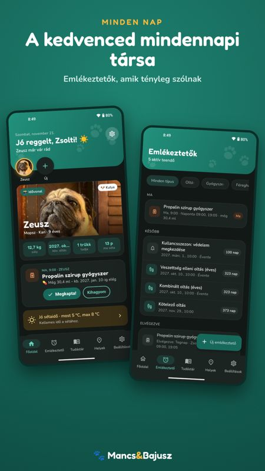
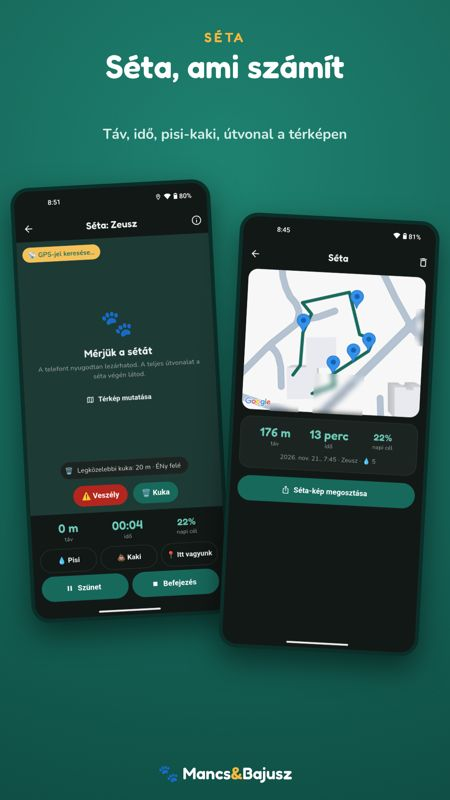
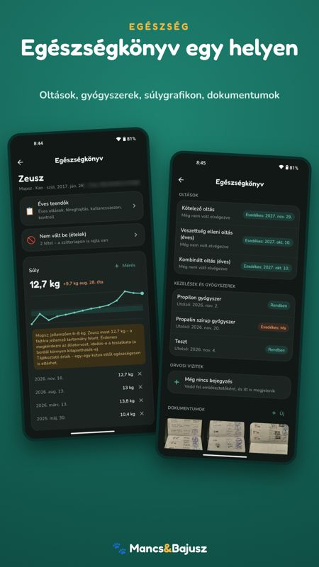
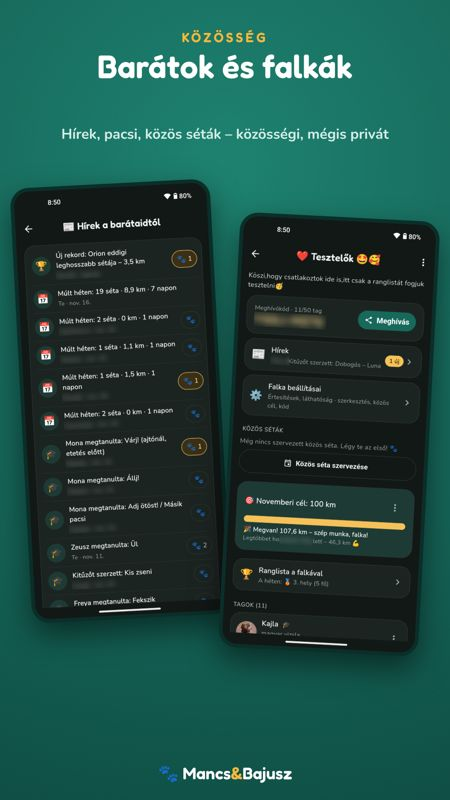
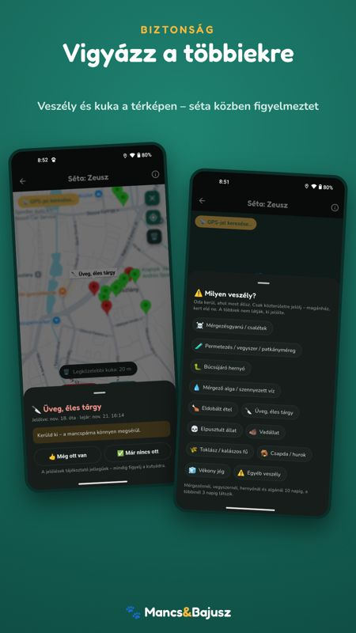
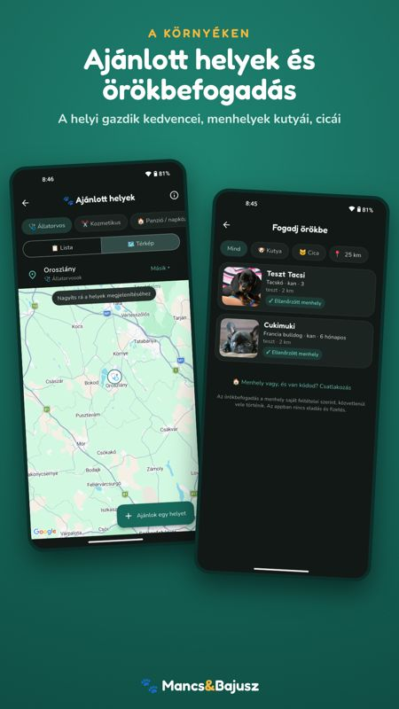
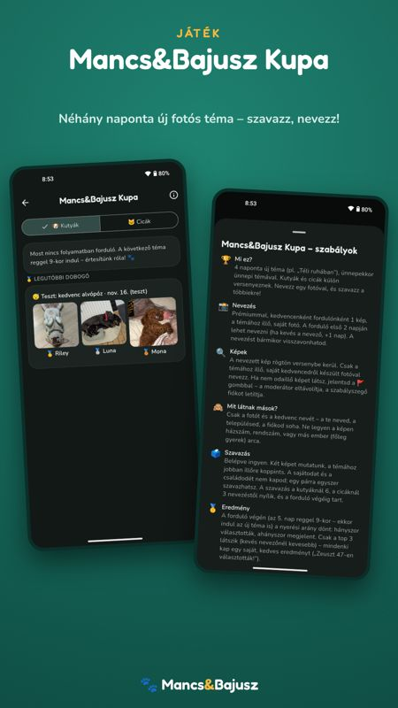
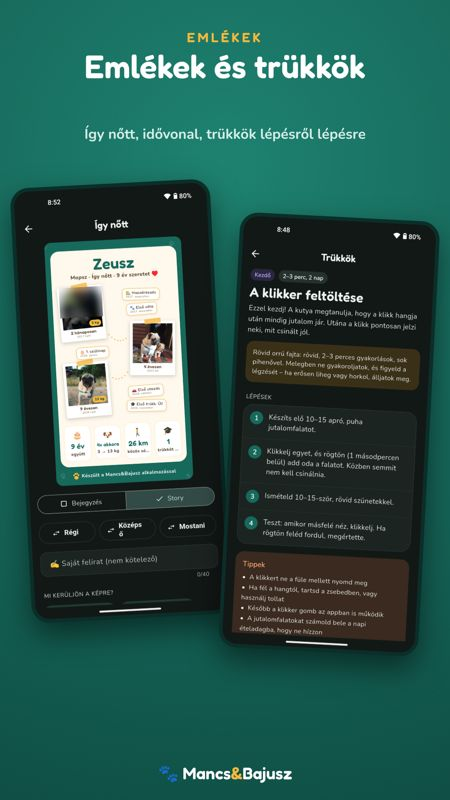

Séta, emlékeztetők, egészségkönyv, barátok és falkák egy helyen. Közösségi, mégis privát.
▶ Hamarosan a Google Play-enMit tud? ↓
Egy app a mindennapokra: a reggeli sétától az oltásig, a barátoktól a fotós versenyig.
Útvonal térképen, táv, idő, pisi-kaki jelölés, heti összefoglaló és rekordok. Takarékos mérés.
Oltás, féreghajtás, gyógyszer, kontroll: időben szól, akkor is, ha az app be van zárva.
Oltások, kezelések, súlygrafikon, lefotózott dokumentumok, PDF az állatorvosnak.
Legfeljebb 5 családtag gondoskodhat közösen, élő szinkronnal.
Zárt falkák meghívóval, közös séták, pacsi, heti ranglista és kitűzők.
Mérgezésgyanú, üveg, hernyó a térképen, séta közben figyelmeztet. A kukák is fent vannak.
Elveszett vagy talált állat? A környékbeli gazdik azonnal értesülnek. Plakát egy perc alatt.
A helyi gazdik kedvenc helyei, és ellenőrzött menhelyek gazdira váró állatai.
Néhány naponta új, vidám fotós téma. Nevezz, szavazz, kerülj dobogóra!
Húzd oldalra a képeket.







A közösségi funkciók úgy készültek, hogy a te helyed és útvonalad soha ne látsszon másnak.
Nincs reklám, nincs hirdetési azonosító, az adataidat nem adjuk el.
A séta útvonalát csak a családod látja. A megosztott képen az otthonod környéke rejtve marad.
Az adatok Frankfurtban vannak, a fiókod bármikor törölhető az appban.
Nyilvántartott menhely vagy egyesület? A „Fogadj örökbe” részben ingyen, közvetlenül a környékbeli gazdiknak mutathatjátok be a gazdira váró állataitokat.
CsatlakoznánkÁllatorvos, kozmetikus, panzió, kutyaiskola, állatbolt? Legyél kiemelt partner az Ajánlott helyek között a településeden.
Írj nekünkNem. Belépés nélkül is használható a telefonon. Google-belépéssel jön a felhős mentés, a családi megosztás és a közösségi rész.
Igen. Külön macskás fajták, trükkök, tünet-adatlapok, és a Kupában a cicák külön versenyeznek.
Nem. Az útvonalat csak a családod látja; a barátok csak a km-t és a séták számát, ha ezt bekapcsolod.
Takarékos mérést használ: egy óra séta jellemzően 5–8% akkumulátor.
Igen, dolgozunk rajta. Kövesd a Facebook-oldalunkat, ott jelezzük, amikor elérhető.